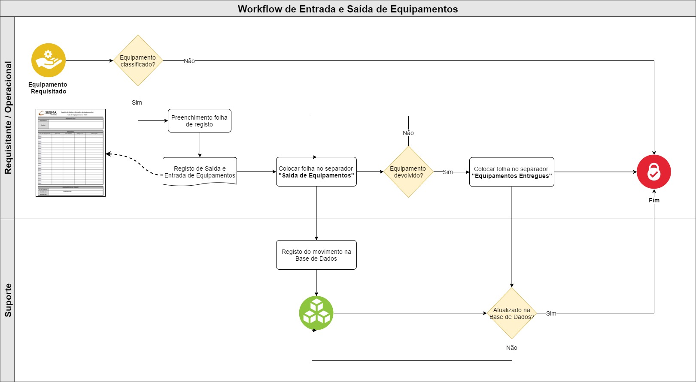
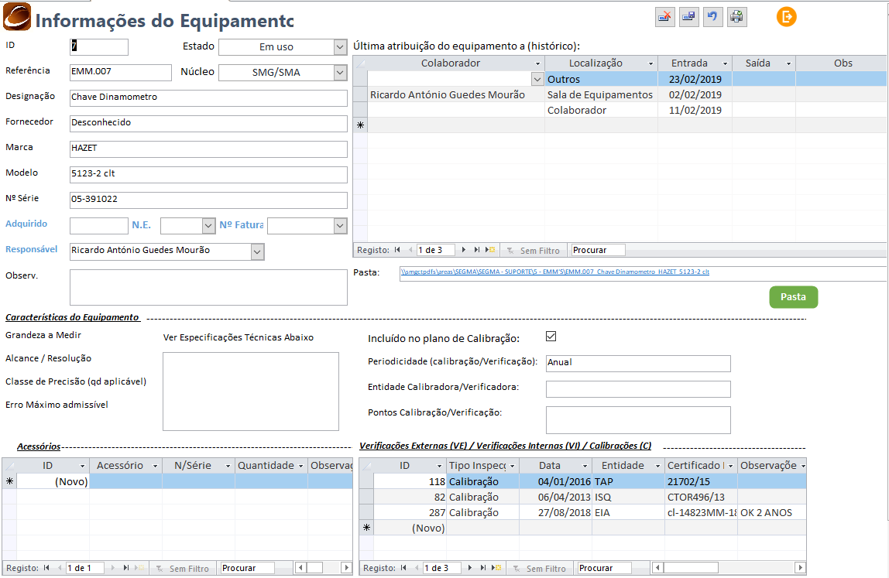

6. Gestão de Equipamentos¶
Esta secção pretende documentar o processo de gestão de equipamentos e respetiva sala de equipamentos.
6.1. Workflow Sala Equipamentos¶
Todo o movimento de material na Sala de Equipamentos, deverá seguir o seguinte workflow procedimental, sendo registado através da base de dados.
6.2. Base de Dados¶
A seguinte secção pretende documentar o registo e gestão de equipamentos na base de dados.
6.2.1. Registo novo equipamento¶
Para registar um novo equipamento deverá aceder ao separador Equipamentos, na base de dados de suporte, e clicar em Adic. Novo Equip. sendo necessário o preenchimento do seguinte formulário:
Nota
Os equipamentos são classicados através de dois tipos, EMM ou ESEG.
EMM: Equipamentos de Medição e Monitorização.
ESEG: Equipamentos Controlador pela sua afetação.
6.2.2. Movimentação¶
Qualquer saída ou entrada de um equipamento, na Sala de Equipamentos, deverá ter um registo na base de dados. Para tal, deverá ser preenchida a tabela de Atribuições do respetivo equipamento, conforme exemplificado na imagem em anexo.
Nota
A primeira linha corresponde sempre ao último movimento do equipamento.
As colunas Entrada e Saída deverão estar sempre preenchidas, quando o registo daquele movimento está concluído.